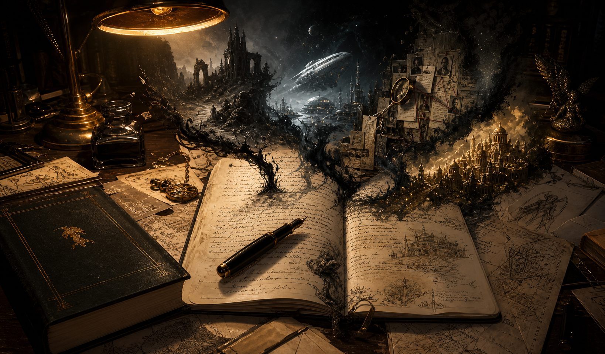

Смерть «попаданцам»! Противостояние
Science fiction novel. Confrontation — published in print by EKSMO, Russia’s largest publishing house.
Writer
He doesn’t write stories. He builds universes — then tells stories inside them.
A novel published by EKSMO — Russia’s largest publishing house. Multiple fiction cycles, each with its own fully developed universe. A short story written in 2017 that anticipated the machine-consciousness debate by seven years. Almost every work, even the shortest, has a detailed world behind it.

Science fiction novel. Confrontation — published in print by EKSMO, Russia’s largest publishing house.
Names and genres. The texts speak for themselves in the archive.
Anticipated the AI-consciousness debate by seven years.
Each universe is built before the first line of its story is written — with its own physics, history, conflict, and aesthetic.
He learned the craft alongside the generation of Russian fantastika that includes Sergei Lukyanenko and Oleg Divov.
Short fiction across science fiction, fantasy, comedy, cosmic horror, and urban mysticism — collected in a bilingual reader.